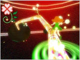
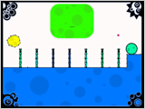
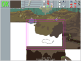
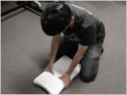
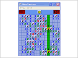
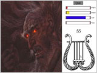
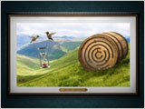
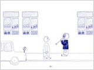
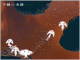

What's New
2010/8/26 プレゼンテーション参加作品を発表！
■プレゼンテーション概要
開催日： 2010年9月17日（金） 18:30-20:50（予定）
会場： 幕張メッセ・国際会議場「201」会議室
観覧方法： 東京ゲームショウ2010ビジネスデイの入場パスをお持ちの方であれば、参加いただけます。
■USTREAMでライブ配信決定！
SENSE OF WONDER NIGHT UST配信は、9/17(金)18:30～20:50の予定です！ぜひ、ご覧ください！
■プレゼンテーション作品
一般部門
- 
- アノソノコノミチャン
- 芸夢中心（ゲイムセンター）［日本］
- 
- Everything can Draw!
- Mahdi Bahrami［イラン］
- 
- Infinite Blank
- Evan Balster［アメリカ］
- 
- ラブプレス＋＋ ～俺の嫁 にマッサージ～
- 神奈川工科大学 情報メディア学科 白井研究室［日本］
- 
- 音楽マインスイーパ
- ゲーム製作者コミュニティin札幌［日本］
- 
- Orfeo: a Game in Music
- Roberto Dillon［シンガポール］
- 
- Record Tripping
- Bell Brothers［アメリカ］
- 
- Ulitsa Dimitrova
- Lea Schönfelder and Gerard Delmàs［ドイツ］
スマートフォン部門
- 
- Spirits
- Spaces of Play［ドイツ］
「センス・オブ・ワンダー ナイト 2010（SOWN 2010）」は、ゲーム開発者にスポットライトを当て、“見た瞬間、コンセプトを聞いた瞬間に、誰もがはっと、自分の世界が何か変わるような感覚”＝「センス・オブ・ワンダー」を引き起こすようなゲームのアイデアを発掘し、東京ゲームショウにてプレゼンテーションの機会を提供するものです。
3回目となるSOWN 2010では、募集カテゴリーに「スマートフォン部門」を新設。
また、プレゼンテーションに選ばれた作品は、東京ゲームショウのビジネスデイ期間中、展示会場内に特設コーナー「SOWNパビリオン」を設け、より多くの業界関係者へのアピールの場を提供します。
今年も、より斬新なアイデアを広く募集します。世界中からゲーム業界関係者が集う東京ゲームショウで、あなたのアイデアをプレゼンテーションしてみませんか？
そして、そのプレゼンテーションに参加する他の仲間や、オーディエンスからも刺激を受け、新しい発見や人的ネットワークを得ていただきたいと考えています。
■「センス・オブ・ワンダー ナイト」の目的
- 実験的であり、創造的であり、伝統的と呼ばれないゲームデザインやアイデアを含んだゲームを紹介すること
- 「センス・オブ・ワンダー」を感じられるゲームが作られることの重要性を紹介し、それにより、ゲーム産業の活性化を図ること
- 実験的なゲームを開発している人たちに、将来へのチャンスの場を提供すること
- ゲームデザインに新しい領域を作り出していくこと
発表を期待されているのは、プロトタイプのデモや、実験的な要素を持った発売済もしくは発売予定のゲーム、変なことを思いついた学生が開発したゲームといったものです。プロやアマチュアといった区別もまったくありません。小さなベンチャー企業のゲームや、一人で開発しているような同人ゲームの投稿も歓迎します。
もし、「センス・オブ・ワンダー」を引き起こせるようなゲームを発表したいと思われるなら、以下のエントリー方法をご確認のうえ、あなたの作品を応募してください。
「センス・オブ・ワンダー ナイト」が対象とするゲーム
- ユーザーインターフェイスのイノベーション
自然言語処理、画像認識、ジェスチャーコントロールなどを応用した、新しい種類の体験を提供するゲーム
- 自動生成によって生み出されるようなゲーム
ゲームプレイやユーザーがプレイする環境が、プレイヤーの選択によって劇的に変化するような世界を作り出すゲーム
- インタラクティブなストーリーテリング
ゲーム内のストーリーの体験を新しい形で提供し、今までにない新しい物語へ展開するツールとして発展できるもの
- 創発的な要素を持っているようなゲーム
物理システムをゲームプレイ要素の中にうまく組み込んでいたり、ＡＩ同士の組み合わせによって新しいゲームプレイを生み出していくようなもの
- とにかくなんだか訳が分からないけれど、すごいもの
とにかく観た瞬間に「これはスゴイ･･･」と感銘を与えられるゲームなら何でもかまいません！
「センス・オブ・ワンダー ナイト」が対象としないゲーム
- ゲームそのものに必ずしも関係ない要素が中心となっているもの
これまでになかったバックグラウンドの設定やシチュエーション、キャラクターデザイン、グラフィック、ストーリー、オーディオといったゲームを構成する一要素が驚きの中心である場合
- すでに存在しているジャンルやそれを単に混ぜたりしたことで生み出された新ジャンル
ただし、それにも関わらず、本当に新しいゲーム体験を作り出している場合は除きます
- 特定の客層だけをターゲットにしていることが新しい理由である場合
女性のためだけのゲームや、老人向けといったもの。ただし、それでも多くの人が感銘を受けるようなものの場合は除きます
- ゲームプレイに影響を与えない、純粋な技術的なイノベーション、実験的なビジネスモデル、流通のメカニズム
それらを完全に排除するものではありませんが、ゲーム体験に直接かつ明快に変えることが明らかになっている必要があります
以上のガイドラインは、曖昧かつ不完全なものです。予想外のものは、常にこうして言葉として予測したものを越えて登場し、だからこそ、多くの人が驚きもするのです。そのため、一定の指針としてご理解ください。
発表されるゲームは、完全にできあがっているゲームや、成功したゲームである必要はありません。なぜなら、失敗する可能性のあるゲームデザインからも、多くのことを学び、次へと前進していくための要素となりうるからです。発表されるゲームは「驚き」を伴ったものであってほしいですが、「楽しさ」は絶対条件ではありません。
ゲームの予算規模やチームの規模、ゲームの発売が決まっているか、もしくはすでにリリースされているかどうかということは、まったく問題にしません。また、応募を行う際に、ゲームが完成している必要性もありません。さらに、コンシューマ機から、携帯型ゲーム機、携帯電話、パソコンか ら、自作ハードまで、何のハードで開発されているのかも問いません。実績のあるチームが変わったゲームを作り成功しているケースがある一方で、小さなチームから奇妙なゲームが登場し成功しているケースが、ゲーム産業で何度も繰り返されているからです。
さらに、日本からの応募、海外からの応募も区別しません。日本からの応募と同じぐらい、海外からの応募も期待します。
ただし、応募にあたって、プレイアブルなデモや、プレイ動画があることは、選考に非常に有利に働きます。なぜなら、“百聞は一見にしかず”ですから。
■謝辞
「センス・オブ・ワンダー ナイト」は、Game Developers Conferenceで、2001年に始まった「Experimental Gameplay Workshop」から、多くのインスピレーションを受けています。このワークショップを成功させてきた多くの関係者ならびに友人達に、感謝の意を表します。
このページのトップへ戻る


{kind=link}
{kind=link}
{kind=link}
{kind=link}
{kind=link}
{kind=link}
{kind=link}
{kind=link}
{kind=link}